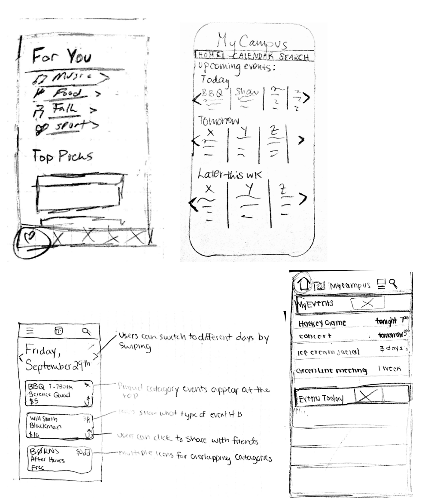
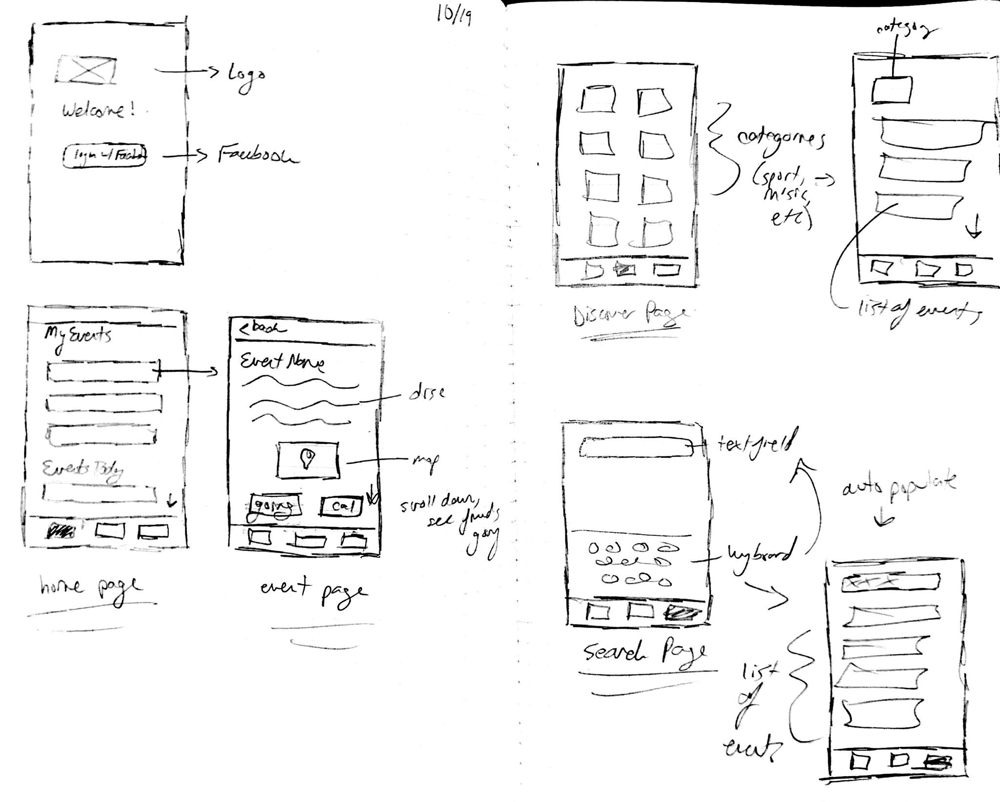
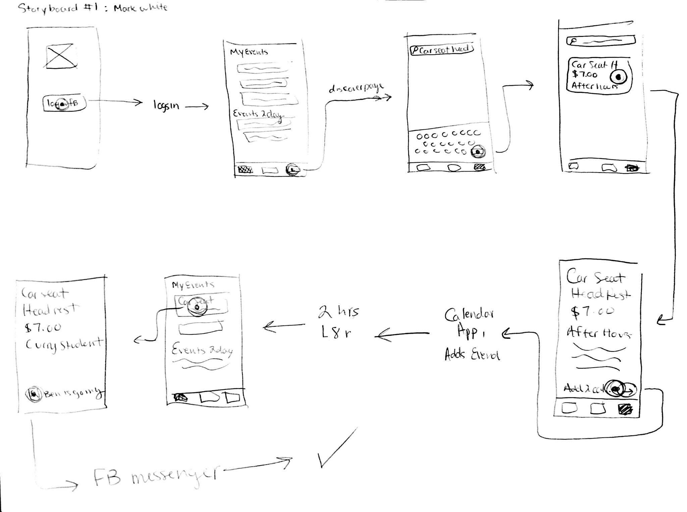
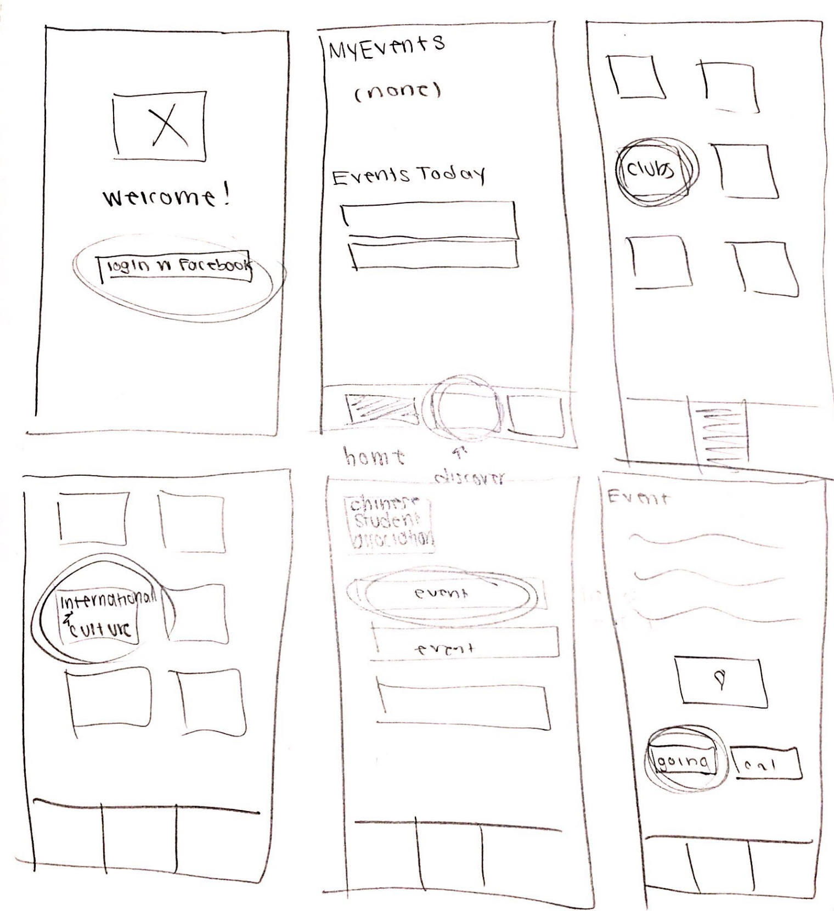
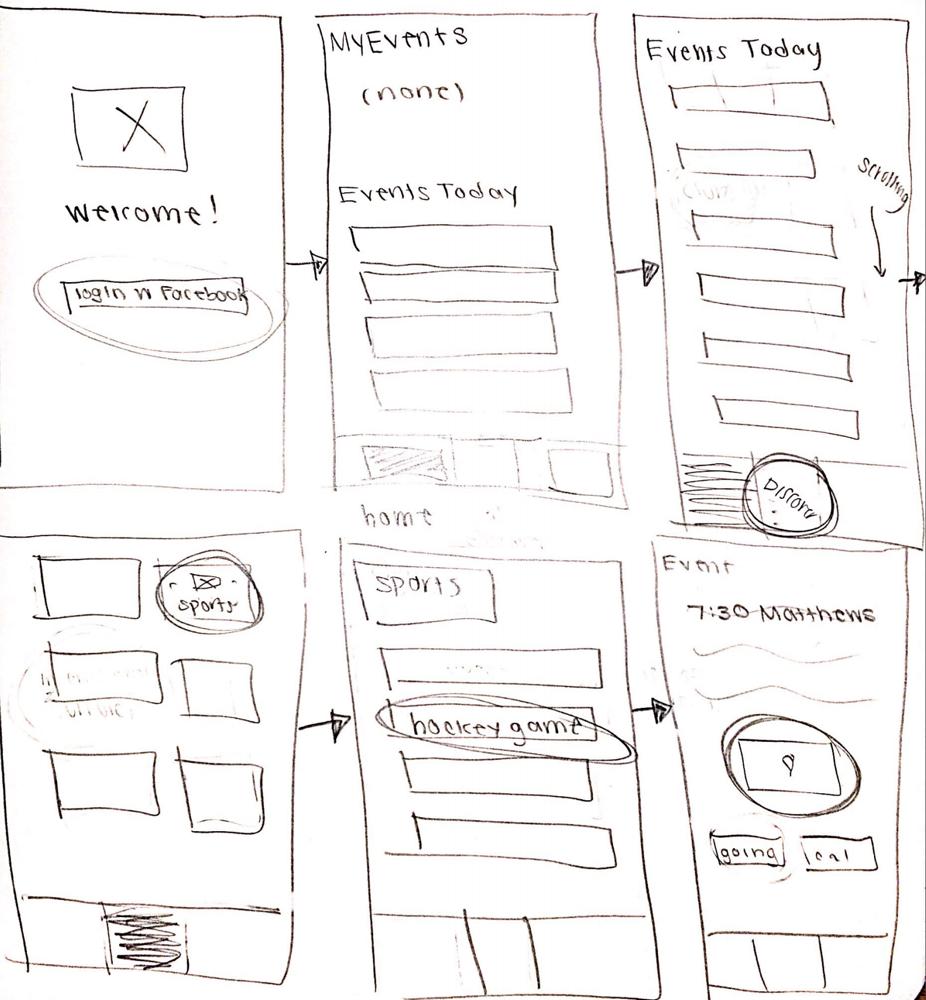

Interaction Scenarios
-
Mark White
-
(Background From Activity Design scenario:) Mark White is a first year Computer Science student who just finished his first week of classes. He hasn't had the chance to make a lot friends yet, but he heard from his roommate that there is a band playing on campus this weekend that he is interested in, Car Seat Headrest. He wants to know more information, but he is too shy to initialize a conversation with his roommate, or anyone else on campus...
He wants to know more information, and turns to the myCampus app that he downloaded at orientation to get it. Because it is his first time using the app, he is faced with an account creation process. He fills in his name and chooses to log in with facebook, and is then brought to the regular home page of the app.
He ignores everything on the page and clicks directly on the search button, as he is only interested in finding out information on a specific band. He types in "Car Seat Headrest" and the search automatically populates the screen. There is only one result in the search results, as his search term was fairly specific. Mark clicks on this first and only event, and instantly marks himself as going. He then presses the "add to calendar" button on the event page, and closes the app. To confirm that he was indeed free for the event, he switches to his calendar app and views the day to ensure that there are no conflicts. There are none. He switches back to the app to confirm the location of the event. The event page is still open automatically. He sees the location listed as the Curry Student Center, which he recognizes and knows is about a 15 minute walk from his dorm.
Later on, even though he is shy, Mark decides that he should look to see if anyone that he met at orientation is also going to the event. He opens the myCampus app once again, and on the opening page of the app he sees the "Car Seat Headrest" event under the list of events that he is attending. He clicks on the event to see if any of his facebook friends have marked themselves as going. He sees a friend on the page, and clicks on their profile picture to open up their facebook profile and message them to make plans to meet up and walk to Curry together.
-
Jenny Malone
-
(Background From Activity Design scenario:) Jenny Malone is a second year Chemistry student back on campus for the fall, and just got out of her last class for the week. All her close friends are on co-op this semester, so she does not have any plans for the night. She doesn't want to spend her night watching Netflix, so she decides to find an event to go to. She narrows down her selection to going to an athletic event, as she has an interest in sports...
Jenny decides that she wants to go to an event tonight instead of staying home alone. She downloads the MyCampus app, because she saw an advertisement for it on a bulletin board on campus. Once it is downloaded she opens it up and proceeds to create an account through facebook. Once she has set up her new account, her home page is populated with events relevant to her. She scrolls through a few of them, but does not see anything that she is interested in, so she clicks on the discover page to browse events by category.
She is looking for a sports event, and decides the best way to find what she is looking for is to click on the sports category on the discover page, and look at the first few events in that category, as they are probably sorted in order of happening next to happening in the future. She scrolls through the list of category types, showing as boxes with an icon in the middle, and a small description underneath. Once she clicks on the category, her screen is populated with the next sporting events happening on campus. She sees a hockey game is happening tonight, and clicks on that event to learn more information. Once on the event page, she can see that it is a free event happening at 7:30pm, right down the street at Matthews arena. She does not need to save it to her calendar, or send it to her friends, because she is going immediately to the event. She does however click on the "directions" button, and opens up her maps application to see how long it will take to walk there, so she knows the best time to leave. At that point she is finished with the app, and puts her phone to sleep to get ready for the game.
-
Gregory
-
(Background From Activity Design scenario:) Gregory, an international student, is not only adjusting to his first year at Northeastern but to the States. He is having a hard time because he misses his traditions and friends. Because he has a single in International Village, it is difficult for him to make new friends here. He wants to meet people, especially ones that share his culture and wants to find a club on campus to join to attend their events...
Gregory decides that he wants to join a club on campus to find people who share his values and culture because he is having a hard time making friends. He misses his traditions and is not adjusting to life at Northeastern easily and wants to find a comfortable environment. He downloads the MyCampus app that he heard about during Orientation and logs in with his facebook account. Because this is the first time he is using the app, the home page shows an empty list under MyEvents and only shows the events that are occurring that day. He finds the explore tab on the top of the screen and clicks on it. Finding himself on a page of listed categories of events, he chooses Clubs. He then scrolls down the list of club categories and finds what he is looking for: International and Cultural subcategory. He quickly the finds Chinese Student Association club and clicks on it. He finds the first event by this club and clicks on Details. He then adds this event by clicking on the button at the end of the page. He notes that the event is in afterHours at 4 pm on Saturday and adds this information to his calendar app on his phone.
Design Options
-

-
We chose the homepage as our most important window because for several reasons. It is the page that will be viewed the most. When people open the app it will be the first thing they see, and for some, the only thing they will see. It also contains the most amount of relevant information, as it is tailored to the user. The homepage will show upcoming events for categories that the user selects, and will hopefully allow users to easily find new events that they are interested in attending in the shortest time possible. Ultimately, we decided on a design that showed both the users events and the events for the day, as those were the most important and time-sensitive pieces of information to the user.
Final Design

Home page: For the home page, we chose to have the user's events be the first and top thing on the page. We thought it was important to show the events that they are attending, as they probably want to access that information the most. Underneath that we put the different event categories that the user chose, as this is also relevant personalized information that they want to see first.
Event page: On the actual event page, we have the name, date, time, and price as the major information to be shown. We felt that this is the most important information to show primarily, and then below we have a brief description of the event, a link to directions, who is going (facebook friends), an option to confirm that they are going, and a share button to send the event to friends. We thought this was a good amount of interaction and call to action options for the user to they an engage with the content.
Discover page: On the discover page, we have all the major categories listed in alphabetical order. The user can scroll down and look find a category that they are interested in, and then click on that category to learn more and see what type of those events are happening soon. The categories are represented in boxes with a small name underneath of the category. We felt it was important to add a visual element so the user can be engaged and will find interest in.
Search page: For the search page, we wanted to keep things simple and have a basic search function. There is a search bar, which when clicked will bring up a keyboard. This focuses the user's attention to the search and limits distractions. As the user types in suggestions, the space below the spacebar will be populated with relevant results. This auto suggestion allows the user to potentially end their search early, which will cut down on their time looking for their result.
Storyboards
(based on interaction scenarios listed above)
-
Mark White

-
Jenny Malone

-
Gregory

|